العمل اليدوي
إعادة تنفيذ نفس خطوات الإرسال والمتابعة في كل حملة.
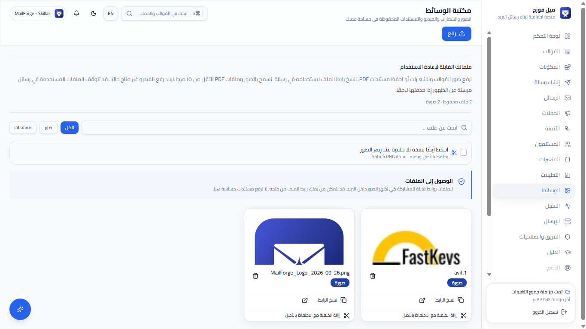
MailForgeby Skillak استكشف المنصة ↗من فوضى Gmail وملفات Excel إلى منظومة واحدة تساعد الأعمال العربية على تصميم حملاتها البريدية، تنظيم جمهورها، أتمتة المتابعة، وقراءة النتائج.
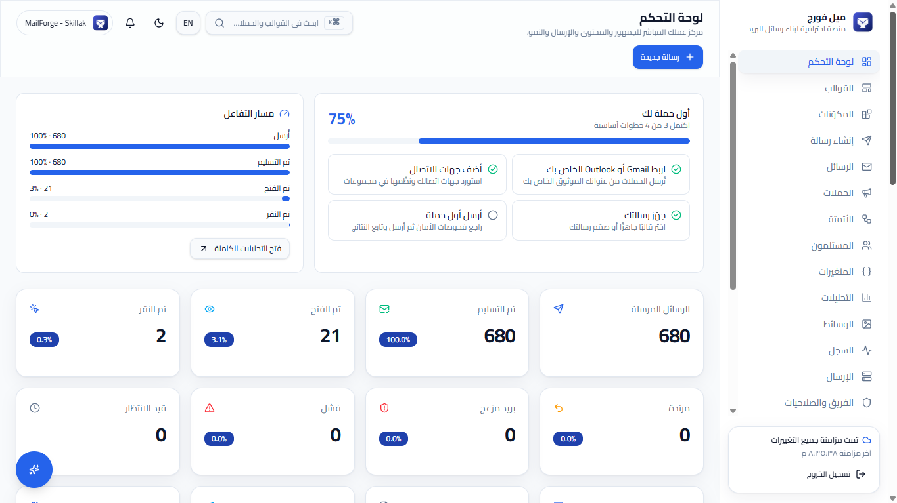
البريد الإلكتروني قناة مهمة للتواصل مع العملاء، لكن إدارة حملاته قد تتحول إلى سلسلة من الأدوات والخطوات اليدوية المتفرقة.
تكتب الرسالة في مكان، وتجهز التصميم في مكان آخر، وتحتفظ بقائمة العملاء في جدول، ثم ترسل وتعود لتبحث عن النتائج وتتابع من لم يتفاعل.
ومع كل حملة، تتكرر الرحلة من البداية.
إعادة تنفيذ نفس خطوات الإرسال والمتابعة في كل حملة.
جهات الاتصال موزعة بين جداول وملفات وقوائم مختلفة.
الحاجة إلى قوالب ومحرر يراعي اتجاه الكتابة من اليمين لليسار.
صعوبة ربط الإرسال بالتفاعل والمتابعة والتحسين.
MailForge لا تستبدل البريد الإلكتروني؛ بل تضيف طبقة لإدارة التسويق عبره بصورة منظمة.
كتابة · قوائم · تصميم · تقارير
من الإنشاء إلى التحسين، داخل مساحة عمل واحدة.
تتعامل MailForge مع نقاط احتكاك متتابعة في دورة التسويق عبر البريد. كل نقطة تبدو صغيرة بمفردها، لكنها تتحول إلى وقت ضائع وأخطاء وتجربة غير مترابطة عندما تتوزع على أدوات مختلفة.
في كل حملة يعيد الفريق كتابة الرسالة، وتجهيز القائمة، ونسخ البيانات، وجدولة التذكيرات، وتجميع النتائج. هذا يجعل العملية بطيئة ويجعلها معتمدة على ذاكرة الموظف.
جهات الاتصال تتوزع بين ملفات CSV وExcel وGoogle Sheets وأجهزة أعضاء الفريق، مع اختلاف تنسيق الأعمدة وتكرار السجلات وصعوبة معرفة حالة الاشتراك.
قد يحتاج المسوق إلى إصلاح اتجاه النص والأزرار والمحاذاة والخطوط يدويًا، خصوصًا عند الجمع بين العربية والإنجليزية داخل الرسالة الواحدة.
إرسال الرسالة نفسها لكل المشتركين يقلل ملاءمة المحتوى، وقد يؤدي إلى تجاهل الرسائل أو ارتفاع إلغاء الاشتراك.
اختيار العنوان وكتابة النص وصياغة CTA وتصميم الرسالة يتطلب مهارات ووقتًا، وقد يتوقف إطلاق الحملة لأن الفريق لا يعرف من أين يبدأ.
بعد الإرسال يحتاج الفريق إلى معرفة من تفاعل، ومن يحتاج رسالة متابعة، ومتى يجب التواصل مرة أخرى. من دون نظام واضح قد تسقط فرص مهمة.
قد تعرض أدوات الإرسال عدد الرسائل، لكن الفريق يحتاج إلى فهم النقرات والروابط والارتداد والتوقيت، ثم تحويل ذلك إلى تحسين عملي.
عند مشاركة حسابات وقوائم وقوالب بين أعضاء الفريق أو إدارة أكثر من عميل، ترتفع احتمالات الخلط والأخطاء وتجاوز الصلاحيات.
كل نشاط يرسل رسائل لأسباب مختلفة. لذلك نعرض الاستخدامات الممكنة، مع اعتبار مراكز التدريب والأكاديميات نقطة دخول سوق مقترحة تحتاج إلى تحقق ميداني.
من أول تسجيل وحتى التقييم والدورة التالية، تتكرر نقاط التواصل. MailForge تساعد على تنظيم هذه الرسائل وربطها بقوائم الطلاب والشرائح وسيناريوهات المتابعة.
التركيز الاستراتيجي: البدء بمراكز التدريب والأكاديميات هو فرضية دخول سوق قابلة للاختبار، وليس ادعاءً بأن المنصة لا تخدم قطاعات أخرى.
هذه أمثلة عملية لكيفية توظيف وحدات MailForge. هي سيناريوهات استخدام يمكن إعدادها داخل المنصة؛ ولا تعني وجود تكامل تلقائي مع كل نظام خارجي.
تنظيم التواصل مع الطالب من الاهتمام والتسجيل إلى ما بعد انتهاء الدورة.
حملات العروض والنشرات وتحديثات العملاء، مع إمكان بناء شرائح وفق البيانات المتاحة.
مساحة مركزية لإدارة حملات عدة عملاء مع فصل بيانات كل Workspace.
توحيد التواصل الدوري مع العملاء والمهتمين دون إدارة كل خطوة يدويًا.
تنظيم النشرة البريدية والتواصل مع الجمهور عند إطلاق محتوى أو دورة أو منتج.
تنظيم التواصل مع العملاء المحتملين والعملاء الحاليين عبر رسائل شخصية أكثر اتساقًا.
تتكون MailForge من وحدات مترابطة؛ يمكن للمستخدم أن يبدأ من القالب أو الجمهور أو الحملة، ثم ينتقل إلى بقية الرحلة.
أنشئ الحملة، اختر الجمهور والقالب، راجع جاهزية الإرسال، ثم أطلق الحملة أو حدد موعدها.
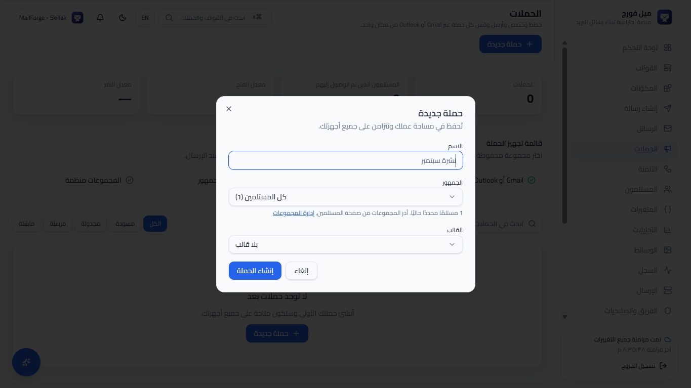
مكتبة قوالب، محرر مرئي، كتل قابلة لإعادة الاستخدام، ومعاينة للموبايل والكمبيوتر.
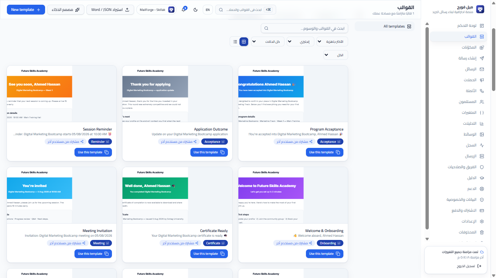
استيراد CSV، مطابقة الحقول، مجموعات ووسوم، فلاتر ديناميكية، ومتغيرات مخصصة لإدارة الجمهور.
سلاسل بريدية متتابعة، مشغلات مرتبطة بالتفاعل، ومخطط لإنشاء مسارات حملات بمساعدة AI.
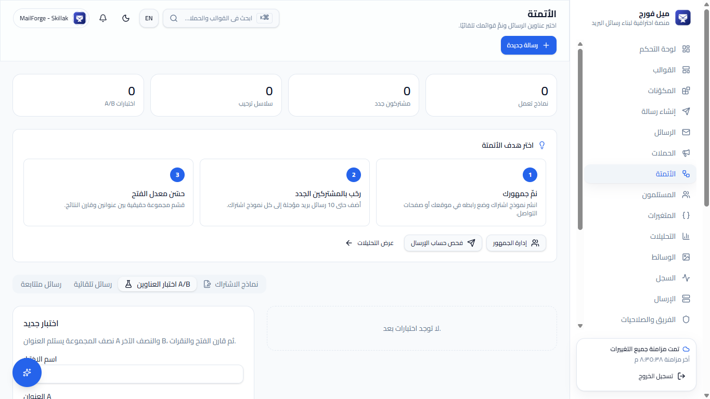
متابعة مؤشرات الإرسال والفتح والنقر والارتداد، تحليل الروابط، وتوقيت التفاعل لمساعدة المستخدم على تحسين حملاته.
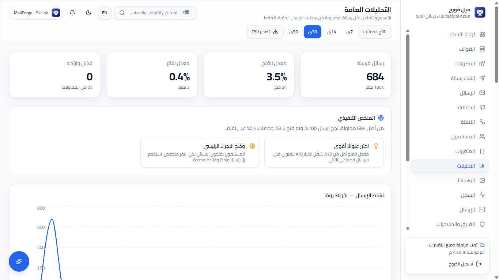
أدوار وصلاحيات متعددة، دعوات للفريق، ومساحات عمل منفصلة لتنظيم عملاء الوكالات.
إدارة الصور والشعارات والملفات المستخدمة في الرسائل والقوالب، مع روابط قابلة للإدراج وإعادة الاستخدام.
الرئيسية · Showcase · المتجر · صفحة المنتج والدفع · تسجيل الدخول · نماذج الاشتراك · مراجعة الحملات · الشروط والخصوصية.
Dashboard · Templates · Builder · Components · Compose · Emails · Campaigns · Campaign Results · Automation · Recipients · Variables · Analytics · Media · Activity · Sending · Team · Agency · Guide · Support · Privacy · Billing · Settings · Trash.
Branding & Splash · إدارة المستخدمين · Broadcast · Partners & Referrals · الدعم والتذاكر · المدفوعات والمتجر والتراخيص.
هذا فهرس وظيفي مستند إلى خريطة المنصة التي قدمتها: بوابة عامة، مساحة عمل للمستخدم، وبوابة إدارة مركزية. استخدم البحث والتصنيف لاستكشاف الأقسام.
كل ما يتيح للزائر اكتشاف MailForge وتجربة العرض والاشتراك والشراء.
تعريف بالمنصة وقيمتها وطريقة الاستخدام، واستعراض المميزات وخيارات ربط Gmail وOutlook، والأسعار والأسئلة الشائعة.
استعراض القوالب وواجهات المحرر وتجارب مبدئية للمنتج، لمساعدة الزائر على فهم شكل العمل قبل إنشاء حساب.
عرض حزم القوالب والمنتجات الرقمية، مع صفحات منتج منفصلة ومسار للشراء ومراجعة الطلب.
تفاصيل المنتج أو حزمة القوالب، ثم إتمام الطلب ومراجعة الدفع وتفعيل الترخيص بعد الاعتماد.
بوابة تسجيل الدخول والاشتراك واستعادة كلمة المرور، مع موفري المصادقة الذين يعتمدهم إعداد المنتج.
نماذج عامة يمكن مشاركتها لجمع المشتركين وإضافتهم إلى الجمهور، مع تدابير لتقليل التسجيلات العشوائية وحماية النموذج.
رابط مراجعة للحملة يمكن مشاركته مع عميل أو مدير لإرسال ملاحظات أو اعتماد الحملة قبل إطلاقها. يجب ضبط انتهاء صلاحية الرموز وصلاحياتها.
صفحات توضح شروط الاستخدام وسياسة الخصوصية ونطاقات البيانات والصلاحيات. وجود الصفحات لا يعني تلقائيًا تحقق امتثال قانوني كامل.
الوحدات التشغيلية التي يستخدمها المسوق أو صاحب النشاط يوميًا.
مؤشرات الإرسال والفتح والنقر والنشاط، اختصارات للإنشاء والاستيراد، وخطوات تهيئة تساعد المستخدم على إكمال أول حملة.
إدارة القوالب الشخصية والمحفوظة والمشتركة، تنظيم بالمجلدات والوسوم، بحث وتصفية، نسخ واستعادة، واستيراد HTML أو JSON أو البدء بمصمم الذكاء الاصطناعي.
محرر Canvas لتجميع عناصر الرسالة وتعديل النصوص والأزرار والصور والفواصل والأعمدة، مع معاينة للموبايل والكمبيوتر ودعم متغيرات مثل {{first_name}} وأدوات مساعدة للكتابة.
حفظ أجزاء قابلة لإعادة الاستخدام مثل Header وFooter وأزرار CTA وتذييلات الاشتراك، ثم إدراجها في قوالب مختلفة لتوحيد الهوية وتقليل التكرار.
إرسال رسالة فردية أو اختبارية، تحديد وضع الرسالة الشخصي أو الترويجي، اختيار المرسل، إضافة CC أو BCC، إرفاق ملفات، ومعاينة أولية وفحوصات محتوى قبل الإرسال.
أرشيف الرسائل والمسودات وحالات الإرسال والقبول والفشل والتأجيل، مع البحث والتصدير أو الرجوع إلى سجل الرسالة.
إنشاء حملة باسم واضح، اختيار الجمهور والقالب، ضبط التوقيت والجدولة، معاينة الإعدادات، مراجعة تجهيز الحملة قبل الإرسال، ومقارنة الحملات أو اختبار عناوين A/B بحسب الوظائف المتاحة.
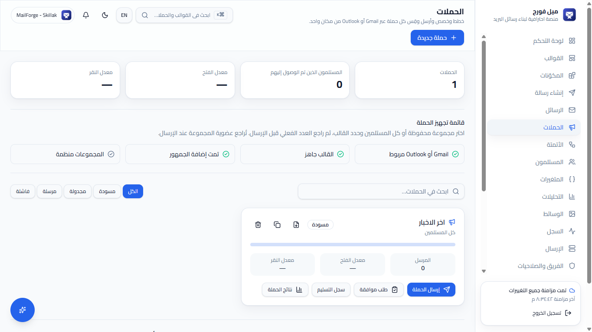
قراءة مؤشرات كل حملة، حالات التسليم والفتح والنقر والارتداد وإلغاء الاشتراك، وتحليل الروابط، مع ملخص أو تقرير مدعوم بالذكاء الاصطناعي بحسب ما تم تفعيله.
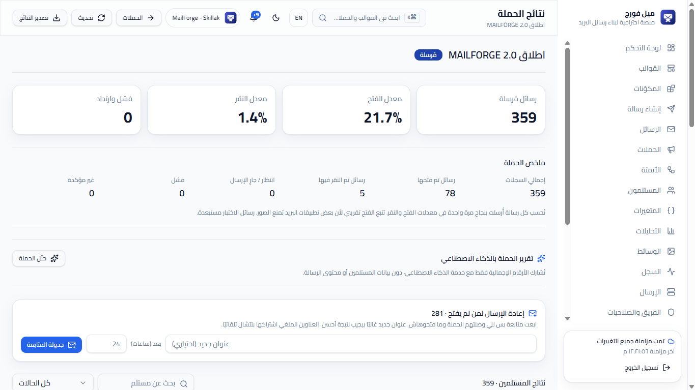
إنشاء سلاسل متتابعة، تحديد فواصل زمنية، ربط بعض الخطوات بتفاعل المستلم مثل الفتح أو النقر، واستخدام AI للمساعدة في إعداد مسار حملة.
استيراد وتصدير CSV/Excel، مطابقة الحقول، مجموعات وTags وفلاتر، اكتشاف التكرار وبعض أخطاء النطاقات، اقتراح الجمهور، سجل إلغاء الاشتراك والاستبعاد، وخيارات العمل مع Google Sheets بحسب التكامل المتاح.
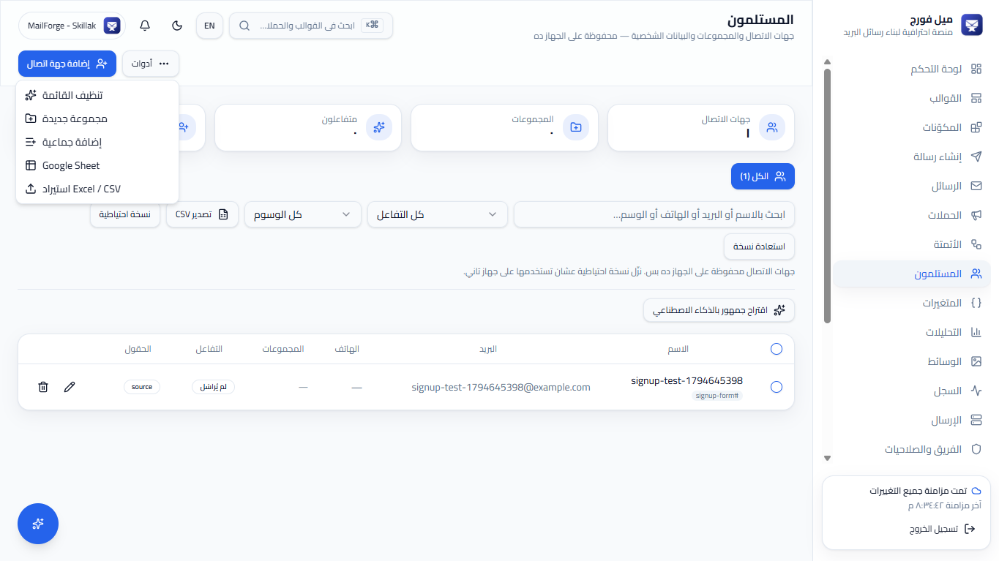
تعريف حقول شخصية مثل اسم الطالب، اسم الدورة، تاريخ التجديد، رمز الخصم، أو اسم الشركة، ثم استخدامها داخل القوالب والحملات.
نظرة عامة على الإرسال والفتح والنقر والارتداد وإلغاء الاشتراك، رسوم زمنية، توزيع حالات التسليم، نطاقات المستلمين، توقيت النشاط، وتحليل روابط النقر.
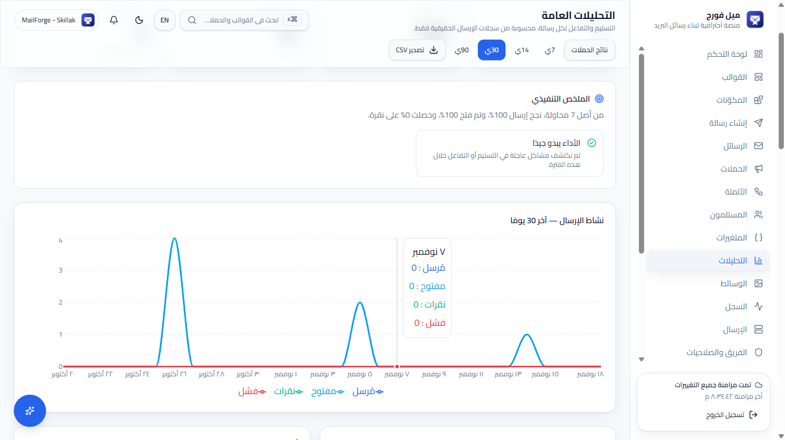
رفع وإدارة الصور والملفات والشعارات المستخدمة في القوالب والرسائل، مع نسخ روابط الملفات وإعادة استخدامها. راجع إعدادات الوصول قبل وضع مستندات حساسة.
تتبع أنشطة الحساب مثل تسجيل الدخول والأجهزة وتعديلات الحملات وتغييرات الصلاحيات لدعم المراجعة والتدقيق.
ربط حسابات Gmail/Google Workspace وOutlook/Microsoft عبر OAuth، متابعة الحصص الداخلية، إعداد نطاق التتبع المخصص، وفصل الحسابات المرسلة بحسب الاتصال.
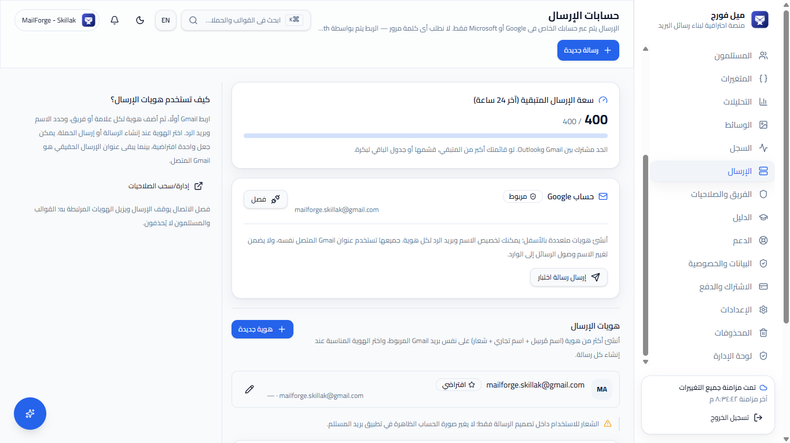
دعوة أعضاء الفريق وتوزيع أربعة أدوار موصوفة: Owner وAdmin وEditor وViewer، مع تقليل وصول الأعضاء إلى الإعدادات الحساسة وفق الصلاحيات.
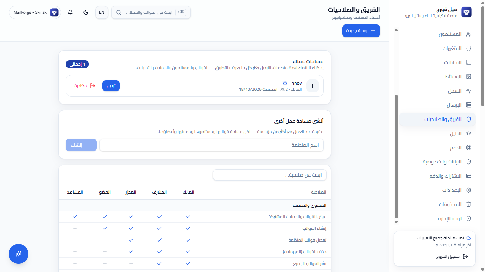
إنشاء مساحات عمل منفصلة لعملاء الوكالة، بهدف فصل الجمهور والقوالب والحملات وإدارة العملاء من حساب مركزي.
إرشادات خطوة بخطوة حول ربط البريد واستيراد الجمهور وإنشاء القوالب والحملات وإدارة الحساب.
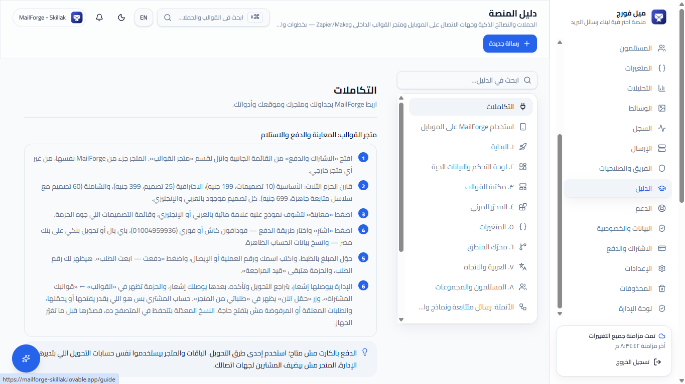
فتح تذاكر الدعم ومتابعة الحالة والردود، لتوثيق طلبات المساعدة بدل ضياعها في المحادثات المتفرقة.
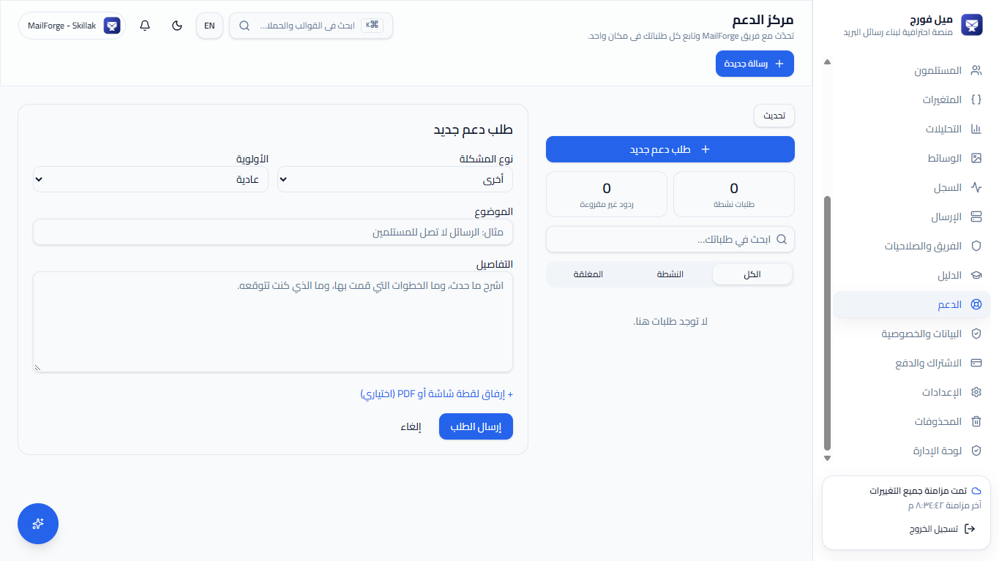
إدارة خيارات الخصوصية، وتصدير بيانات الحساب وفق الوظائف المتاحة، ومراجعة معلومات البيانات والاحتفاظ بها.
عرض الخطة الحالية، الفواتير، حالة الاشتراك، وخيارات الترقية أو إدارة الدفع بحسب بوابات الدفع التي تم تفعيلها.
إعداد اللغة العربية أو الإنجليزية، اتجاه RTL/LTR، المظهر الفاتح والداكن، تفضيلات الحساب والأمان، وتجربة الموبايل القابلة للتثبيت كتطبيق ويب PWA مع شاشة بداية واختصارات بحسب دعم المتصفح والجهاز.
استعادة بعض العناصر المحذوفة قبل الحذف النهائي، وفق نوع العنصر وسياسة الحذف المعتمدة.
أدوات تشغيل المنصة وإدارة المستخدمين والخدمات والهوية والدعم.
إدارة اسم المنصة والشعار والألوان وعناصر شاشة البداية وتجربة التثبيت على الموبايل.
استعراض حسابات المستخدمين وإدارة حالات التفعيل أو الإيقاف وفق دور الإدارة والسياسات التشغيلية.
إرسال إعلانات وتنبيهات داخل المنصة إلى المستخدمين أو مجموعات محددة بحسب إعدادات نظام البث.
مراجعة طلبات الشركاء والإحالات والعمولات واعتماد المستحقات وفق قواعد برنامج الشركاء.
استعراض تذاكر المستخدمين والرد عليها وتغيير الحالة ومتابعة وقت الحل وجودة الدعم.
مراجعة طلبات المتجر والمدفوعات اليدوية واعتماد التراخيص وحزم القوالب بعد التحقق.
قد تظهر في أكثر من صفحة ولا تتطلب مسارًا مستقلًا.
تنبيهات داخلية وعدّاد غير المقروء وإعلانات الإدارة وفق الجمهور المستهدف.
إمكانية تثبيت تجربة الويب على الموبايل، مع شاشة بداية واختصارات حسب المتصفح.
جدولة الحملات وعرض بيانات زمنية تراعي التوقيت المحلي في التحليلات.
إعداد نسخ عناوين أو محتوى للمقارنة عند تفعيل الاختبار في مسار الحملة.
قائمة استبعاد مركزية والتحقق من حالة الاشتراك قبل الإرسال وفق منطق التنفيذ.
الاحتفاظ بالمحتوى واستعادة العناصر المحذوفة قبل الحذف النهائي وفق سياسات السجل وسلة المهملات.
فكرة MailForge Intelligence هي نقل المساعدة الذكية إلى اللحظة التي يحتاجها المستخدم: عند التخطيط، والكتابة، والتصميم، واختيار الجمهور، وقراءة النتائج.
تحويل فكرة عامة إلى خطة حملة وسلسلة بريدية متعددة الخطوات.
اقتراح الشرائح المناسبة وفق بيانات الجمهور وسجل التفاعل المتاح.
إنشاء مسودة قالب متجاوب من وصف موضوع الرسالة والهدف.
كتابة المحتوى وتحسين الصياغة والأسلوب وتصحيح النصوص.
فحص إرشادي لمحتوى الرسالة واقتراح بدائل لعبارات قد تثير الانتباه.
تلخيص مؤشرات الحملة واقتراح ما يمكن تحسينه في المرة التالية.
اقتراح عناوين وPreheaders متعددة للاختبار والتحسين.
المساعدة في تحويل المحتوى بين العربية والإنجليزية ومراعاة اتجاه النص.
اقتراح عبارات افتتاحية وأزرار دعوة لاتخاذ الإجراء بحسب هدف الرسالة.
مساعد يوجّه المستخدم داخل المنصة ويجيب عن أسئلة الاستخدام.
تغطي مجموعة MailForge Intelligence مراحل التخطيط والكتابة والتصميم والاستهداف والفحص والتحليل. الهدف هو إدخال المساعدة الذكية إلى العمل اليومي، لا إضافة محادثة منفصلة فقط.
يأخذ هدف الحملة ويقترح هيكل سلسلة بريدية تصل في نطاق المشروع إلى ست رسائل، مع عناوين ومحتوى أولي وفواصل زمنية. ينتج مسودة متعددة الرسائل يراجعها المستخدم قبل اعتمادها.
يساعد على اختيار الشريحة المحتملة من المجموعات والوسوم وبيانات التفاعل المتاحة، مع ضرورة بقاء قرار الإرسال النهائي للمستخدم.
يحوّل وصفًا نصيًا إلى مسودة قالب بريد، ويقترح هيكلًا بصريًا وألوانًا ونصوصًا يمكن تعديلها في المحرر المرئي.
يكتب مسودة أو يحسّن نصًا قائمًا، ويغير النبرة بين رسمية وودية ومقنعة وحماسية، ويساعد في التصحيح وإعادة الصياغة.
يفحص صياغة الرسالة بحثًا عن إشارات محتوى قد تستدعي الحذر ويقدم اقتراحات تحسين. هذا فحص إرشادي للمحتوى، وليس محاكاة كاملة لمزودي البريد ولا ضمانًا للوصول إلى Inbox.
يلخص بيانات الحملة المتاحة ويضعها في سياق عملي: ما المؤشر الذي يستحق الانتباه؟ ما الروابط الأكثر تفاعلًا؟ ما الذي يمكن اختباره لاحقًا؟
يقترح عادةً مجموعة خيارات متعددة — من 5 إلى 10 وفق وصف الأداة في المشروع — لعنوان الرسالة ونص المعاينة، لإعداد نسخ مرشحة للاختبار بدل اختيار عنوان واحد بالتخمين.
يساعد على التحويل بين العربية والإنجليزية وتكييف اتجاه الكتابة RTL/LTR. التوطين الجيد يعني مراعاة السياق لا مجرد الترجمة الحرفية، ويجب مراجعة اللهجات والمصطلحات قبل الإرسال.
يقترح افتتاحيات وأزرار دعوة لاتخاذ الإجراء متوافقة مع غرض الرسالة، مثل التسجيل أو الحجز أو قراءة التفاصيل أو طلب عرض سعر.
مساعد إرشادي داخل المنصة يشرح الصفحات وخطوات الاستخدام ويجيب عن أسئلة المستخدم حول الإعدادات وسير العمل.
ليس بكثرة أسماء الأدوات، بل بربط السياق: نوع النشاط، والجمهور، واللغة، والقالب، ونتائج الحملات السابقة. ومع الوقت يمكن بناء Playbooks متخصصة لمراكز التدريب والمتاجر والوكالات، بشرط استخدام البيانات المصرح بها وحمايتها وعدم مشاركة بيانات عميل مع آخر.
اختر أي مرحلة لتشاهد ماذا يفعل المستخدم، وما الذي تقدمه MailForge في تلك اللحظة.
يكتشف المستخدم القيمة، ينشئ حسابه، ويتعرف على لوحة التحكم والإرشادات الأولى.
هذه لقطات شاشة من واجهة MailForge التي شاركتها، وليست صورًا تخيلية لمنتج مختلف.
لقطات إضافية من الصفحات التشغيلية التي شاركتها، مرتبطة بوحداتها المقابلة في كتالوج المنصة.
البيانات الظاهرة داخل لقطات الشاشة هي بيانات واجهة/اختبار كما وردت في الصور المرسلة، ولا تُعرض هنا باعتبارها نتائج تجارية لعملاء أو إثباتًا للـTraction.
MailForge تبني تجربة الإرسال حول حساب المستخدم، مع طبقات لإدارة الصلاحيات، سلامة الحملة، وحالة المستلمين.
ربط Gmail وOutlook من خلال آليات المصادقة الخاصة بالمزود، بدل طلب كلمة مرور البريد من المستخدم.
اختبار داخلي عبر المزودينضوابط داخلية لتنظيم الإرسال، وحجز الرسائل المجدولة، والتعامل مع الحالات غير المؤكدة لتقليل احتمال التكرار.
بحاجة إلى اختبار إنتاجي موسعإدارة قائمة الاستبعاد والتحقق من حالة الاشتراك قبل الإرسال، مع تصميم لدعم آليات إلغاء الاشتراك بنقرة واحدة.
يتطلب تحققًا نهائيًا من المزودأدوار للمستخدمين ومساحات عمل للوكالات، بهدف فصل بيانات العملاء وتوزيع المسؤوليات.
اختبار عزل وأمان مطلوبالإرسال من Gmail أو Outlook لا يضمن وصول الرسائل إلى Primary Inbox. تظل سياسات المزود، وحصصه، وجودة القائمة، والمصادقة، والمحتوى عوامل مؤثرة. السقف الداخلي الموصوف في نطاق MailForge هو 400 رسالة لكل صندوق خلال 24 ساعة متحركة، ويجب دائمًا احترام الحد الأقل الذي يفرضه مزود البريد.
هذه خريطة تشغيل مبسطة لمسار الحملة كما تصفه مواصفات MailForge. القواعد الداخلية تساعد على التنظيم، لكنها لا تلغي حدود مزود البريد أو شروطه.
ربط Gmail أو Outlook بصلاحيات مصرح بها، دون طلب كلمة مرور البريد داخل MailForge.
اختيار الجمهور، التحقق من حالات الاستبعاد وإلغاء الاشتراك، ومراجعة البيانات المطلوبة.
القالب، العنوان، المتغيرات، الروابط، المرفقات، المرسل، والجدولة.
حجز الرسائل المجدولة وتطبيق الضوابط الداخلية لتقليل التكرار وتضارب عمليات الإرسال.
إرسال عبر API مزود البريد المرتبط، مع التعامل مع الحصص والرفض المؤقت والأخطاء.
تسجيل الأحداث المتاحة مثل الإرسال والفتح والنقر والارتداد، ثم عرض النتائج بحسب دقة ما يقدمه المزود والتتبع.
السوق يضم حلولًا ناضجة للتسويق والأتمتة وأدوات إرسال عبر Gmail. فرصة MailForge هي بناء تجربة عربية متخصصة تربط أدوات العمل في سياق واحد.
هذه مقارنة لاتجاهات التمركز وليست تدقيقًا كاملًا لميزات أو أسعار كل منافس. يجب التحقق من أي مقارنة مباشرة قبل استخدامها في عرض استثماري.
MailForge تدخل سوقًا فيه منصات ناضجة وأدوات متخصصة. المقارنة الصحيحة لا تقول إن المنافسين لا يملكون AI أو Automation؛ بل تشرح فئات المنافسة ونقاط قوة كل بديل والتمركز الذي تسعى MailForge إلى إثباته.
منصة واسعة للحملات والقوالب وإدارة الجمهور والأتمتة، وتضم أدوات AI لكتابة المحتوى والعناوين وتوصيات الحملات وتحسين توقيت الإرسال.
تقدم حملات البريد، تقسيم الجمهور والقوائم الديناميكية، وأتمتة مثل الترحيب وتذكير المناسبات، مع قنوات متعددة ومساعد AI.
تجمع Email Designer وSegmentation وReporting مع AI Campaign Builder وAI Content وأتمتة متقدمة، كما تشمل CRM وقنوات متعددة.
أداة تعمل بالقرب من Gmail وتوفر Mail Merge وتخصيص الرسائل والمتابعة الآلية وتتبع الفتح والنقر والردود، مع خيارات إرسال مختلفة.
توفر Mail Merge والتخصيص والقوالب والمتابعة والجدولة وتتبع التفاعل، عبر Gmail وGoogle Sheets وOutlook ومنتجات أخرى.
لا تستطيع MailForge الفوز بمجرد القول إنها أرخص أو عربية أو تحتوي على AI. عليها إثبات أن شريحة معينة — مثل مراكز التدريب — تنجز رحلة تواصل أكثر سهولة وملاءمة معها، وتستمر في الدفع. والخصائص المذكورة لدى المنافسين مستندة إلى صفحاتهم الرسمية وقت إعداد هذا العرض؛ الخطط والأسعار والقدرات قد تختلف وتتغير.
روابط مراجعة رسمية: Mailchimp · Brevo · ActiveCampaign · GMass · Mailmeteor.MailForge تستطيع خدمة أكثر من قطاع، لكن دخول السوق يحتاج إلى اختيار شريحة تستطيع الوصول إليها وفهم عملياتها وقياس القيمة التي تحصل عليها.
المنشآت عالميًا التي تحتاج إلى إدارة البريد والتسويق والأتمتة.
القطاعات والبلدان واللغات ومزودات البريد التي يدعمها المنتج فعليًا.
عدد العملاء الممكن الوصول إليهم عبر قنوات المبيعات خلال فترة محددة.
مالك المركز أو الأكاديمية، مدير التسويق، مدير العمليات، أو صاحب الوكالة.
منسق التدريب، مسؤول التسويق، كاتب المحتوى، أو عضو فريق الحملات.
مبيعات يقودها المؤسس، عروض مباشرة، شراكات مع مراكز التدريب، محتوى تعليمي، وندوات تجريبية.
مساعدة العميل على ربط بريده واستيراد قائمة مناسبة وإرسال أول حملة ثم العودة لإرسال حملة ثانية.
لا توجد ميزة واحدة تجعل المنتج محصنًا من المنافسة. الرهان هو جمع عدة طبقات تخدم احتياجًا عربيًا محددًا وتتحسن مع الاستخدام الحقيقي.
اللغة واتجاه RTL ليسا ترجمة للواجهة فقط؛ بل جزء من القوالب والمحرر والمحتوى والإرشاد.
رحلات جاهزة لمراكز التدريب والأكاديميات والوكالات، مبنية على مراحل العمل الحقيقية للقطاع.
مساعدة الذكاء الاصطناعي مرتبطة بهدف الحملة والجمهور والقالب والنتائج، لا بمجرد توليد نص عام.
مساحات العمل والصلاحيات تساعد الوكالة على تحويل MailForge إلى جزء من عملياتها اليومية.
بيانات الأداء المصرح بها يمكن أن تغذي توصيات أكثر ملاءمة، مع عزل بيانات كل عميل وحمايتها.
النموذج المقترح هو SaaS باشتراكات متدرجة حسب حجم الاستخدام واحتياجات الفريق والوكالة. التسعير النهائي يحتاج إلى اختبار مع العملاء.
للفرد أو النشاط الصغير الذي يبدأ بتنظيم حملاته.
للشركات والأكاديميات التي تحتاج إلى متابعة وأتمتة وتحليل.
للوكالات والمستقلين الذين يديرون عدة عملاء.
هذا نموذج إيرادات مقترح، وليس دليلًا على وجود اشتراكات أو مبيعات محققة حاليًا. يجب تسعير الخطط بعد قياس تكلفة الإرسال، والذكاء الاصطناعي، والتخزين، والتتبع، والدعم.
الشفافية في مرحلة المشروع جزء من قوة القصة الاستثمارية؛ المنتج متقدم وظيفيًا، لكن التحقق التجاري ما زال أمامه.
مرحلة تطوير واختبار قبل الإطلاق التجاري.
Controlled Beta مع شركاء تصميم وعملاء تجريبيين، ثم إثبات الاستخدام المتكرر والاستعداد للدفع.
Build → Validate → Monetize → Scaleمقابلات العملاء، إغلاق مخاطر الإطلاق، شركاء تجريبيون، أول حملات حقيقية.
النتيجة: إثبات المشكلة والاستخدام.تحسين Onboarding، اختبار الخطط، تحويل المستخدمين إلى اشتراكات، توثيق قصص الاستخدام.
النتيجة: أول إيراد متكرر واحتفاظ قابل للقياس.تطوير Playbooks لمراكز التدريب والأكاديميات، وتحسين Agency Mode والتكاملات المطلوبة فعليًا.
النتيجة: تميّز رأسي أوضح.التوسع إلى قطاعات وأسواق أخرى، وتكاملات إضافية، وخيارات إرسال تناسب أحجام العملاء المختلفة.
النتيجة: نمو منضبط قابل للاستدامة.الإضافات التالية ليست كلها وظائف معلنة على أنها جاهزة اليوم. إنها فرص تطوير يمكن ترتيبها بحسب طلب العملاء ونتائج الاختبار وتكلفة التنفيذ.
إجابات مختصرة تساعد العملاء والشركاء والمستثمرين على فهم طبيعة المنتج وحدوده.
لا. نطاقها يشمل إدارة القوالب والمحرر والجمهور والحملات والأتمتة والتحليلات والفريق والوكالات. الإرسال جزء من دورة تشغيل أوسع.
نموذج الربط الموصوف يعتمد على OAuth مع Gmail/Google Workspace وOutlook/Microsoft. لا تطلب MailForge كلمة مرور البريد مباشرة ضمن هذا المسار، ولا يتطلب هذا النموذج إعداد SMTP منفصلًا من المستخدم.
لا. لا يمكن ضمان ذلك عبر أي وعد تسويقي عام. مزود البريد وسمعة النطاق والمصادقة وجودة القائمة والمحتوى وتفاعل المستلم كلها عوامل مؤثرة.
لا. هذا سقف داخلي موصوف في تصميم MailForge للحساب المرتبط. يجب احترام حدود المزود الفعلية، واستخدام الحد الأقل بين سياسة MailForge وحدود Google أو Microsoft للحساب المعني.
لا ينبغي افتراض ذلك. طريقة التخزين تختلف حسب نوع البيانات وإعدادات الخدمة. يجب مراجعة سياسة الخصوصية وتوضيح مكان تخزين جهات الاتصال والقوالب والملفات وسجلات التتبع قبل تقديم وعود عن الخصوصية.
ليس بالضرورة. تقنيات حماية الخصوصية وتحميل الصور الآلي قد تؤثر في Open Tracking. لذلك تُعامل معدلات الفتح كمؤشر اتجاهي، ويُقرأ النقر والارتداد وسلوك الحملة في سياقها.
الدليل يوثق عشر وظائف AI ضمن نطاق المنتج، لكن يجب اختبار كل تدفق ومراجعة جودة مخرجاته وتكلفته قبل وصفه بأنه مكتمل إنتاجيًا أو تقديم نتائج أداء عنه.
وفق الحالة التي قدمها صاحب المشروع عند إعداد هذه النسخة: المنتج في مرحلة التطوير، لا يوجد عملاء حاليون، وقد أُجريت اختبارات إرسال داخلية عبر Gmail وOutlook. لا توجد Traction تجارية مثبتة في هذه المادة.
مراكز التدريب والأكاديميات كفرضية دخول سوق أولى، لأن رحلة الطالب توفر استخدامات متكررة للترحيب والتذكير والمتابعة والتقييم. يجب التحقق من الفرضية بمقابلات وتجارب مدفوعة.
MailForge تبدأ من احتياج واضح: مساعدة الأعمال العربية على إدارة حملات البريد الإلكتروني من مكان واحد. والخطوة التالية هي إثبات القيمة مع العملاء، ثم بناء نمو مستدام.